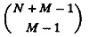
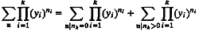
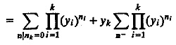
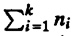
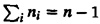

| Previous | Table of Contents | Next |
The key problem with Gordon and Newell’s method as illustrated by Example 35.1 is that the computation of the normalizing constant requires us to enumerate all possible states. For a system with N jobs and M devices, the number of states is given by

This number is of the order of NM – 1 and is usually very large. Buzen solved this problem by devising a simple method to compute G(N). This method is called convolution and is based on the following mathematical identity, which is true for all k and yi
|  | (35.3) |
|  | (35.4) |
Here, n is the set of all possible state vectors {n1,n2,...,nk} such that  = n; and n¯ is the set of all possible state vectors such that . Equation (35.3) simply breaks the sum into two sums — a sum belonging to states in which nk is zero and a sum belonging to the remaining states. In Equation (35.4), the second sum is rewritten so that yk, which is common to all terms in the second sum, is factored out.
Example 35.2 Consider the central server model of Example 35.1. To compute G(N), we need to compute the following sum:
G(N) = y10y20y33 + y10y21y32 + y10y22y31 + y10y23y30 + y11y20y32
+ y11y21y31 + y11y22y30 + y11y20y31 + y12y21y30 + y13y20y30The powers of yi’s in this sum correspond to the 10 states (specified by number of jobs at various devices) listed in Table 35.1. By separating out the terms containing y30, the sum can be rewritten as follows:
G(N) = (y10y23y30 + y11y22y30 + y12y21y30 + y13y20y30)
+ (y10y20y33 + y10y21y32 + y10y22y31 + y11y20y32 + y11y21y31 + y11y20y31)Since y3 is common to all terms in the second part, the sum can also be written as
G(N) = (y10y23 + y11y22 + y12y21 + y13y20)
+ y3(y10y20y32 + y10y21y31 + y10y22y30 + y11y20y31 + y11y21y30 + y11y20y30)Notice that the first part contains terms corresponding to the states of a system with one less device (there is no y3) and the terms inside the parantheses in the second part correspond to the states of a system with one less user (two users instead of three). This allows the problem of determining G(N) to be divided into two smaller problems.
If we define an auxiliary function g(n,k) as
the normalizing constant G(N) = g(N,M) can be computed using a sequence of iterations as follows:
| g(n,k) = g(n,k – 1) + ykg(n – 1,k) | (35.5) |
The initial values for the auxiliary function are
| g(n,0) = 0, n = 1,2,...,N | (35.6) |
| g(0,k) = 1, k = 1,2,...,M | (35.7) |
The iterative relationship specified in Equation (35.5) together with the initial conditions given in Equations (35.6) and (35.7) give a simple algorithm for computing g(N,M). A tabular representation of the algorithm is shown in Table 35.2. The table has N + 1 rows and M columns. The rows are numbered 0 to N. The ith row corresponds to n = i jobs in the system, and the jth column corresponds to the jth service facility. The (n,k)th entry in the table is g(n,k). It is is obtained by adding together the value immediately to its left and the value immediately above multiplied by the corresponding column variable yk. The service demands yk are listed as column headings in the table. The first row corresponding to n = 0 consists of all 1’s, and the leftmost column consists of successive powers of y1. Notice that the leftmost column will be correctly initialized if it is assumed that there is a column of zeros immediately to the left of that column at the start of the algorithm.
Generally, only the rightmost column values are of interest, and therefore, it is not necessary to store the complete table. It is sufficient to store just one column, {G[0],G[1],...,G[N]}, and use the following algorithm:
FOR k ← 1 TO M DO
FOR n ← 1 TO N DO
G[n] ← G[n] + y[k] × G[n – 1]
| TABLE 35.2 Convolution Algorithm | ||||||
|---|---|---|---|---|---|---|
| y1 | y2 | ... | yk | ... | yM | |
| 0 | 1 | 1 | ... | 1 | ... | 1 |
| 1 | y1 | |||||
| 2 | y12 | |||||
| 3 | y13 | |||||
| . . . | . . . | |||||
| g(n – 1,k) | ||||||
| ↓ × yk | ||||||
| n | y1n | g(n,k – 1) → | g(n,k) | |||
| . | . | |||||
| . | . | |||||
| . | . | |||||
| N | y1N | g(N,M) | ||||
| Previous | Table of Contents | Next |